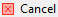

The Data editor appears: * As the Data tab of the Database Object Editor available only for tables and views. * As the Results tab when you run a custom SQL query in SQL Editor
The Data editor allows viewing and editing the data of a database table or view. The central part of the Data editor is the data table. The editor also provides two toolbars and a filter field:
To learn how many rows the data table contains, click the Calculate total row count button in the bottom toolbar. The number of rows appears in a status field next to the button: 
To learn about ways to navigate data in the data table, see Navigation article.
The top toolbar contains the following buttons:
| Button | Name | Description |
|---|---|---|
| Apply filter criteria | Applies filter criteria entered in the filter field above the data table, see Data Filters article for more information | |
| Remove all filters/orderings | Removes all filters and orderings applied to the data | |
| Save filter settings for current object | Saves the current filter settings for the database object to apply next time when you reopen it in the editor, see details in Data Filters article | |
 |
Custom Filters | Opens the Result Set Order/Filter Settings window, see Data Appearance article for more information |
| Configure auto-refresh | Allows configuring data auto-refresh settings, see Data Refresh article for details | |
 |
Forward and backward - history navigation buttons | Navigate forward and backward in the Data Editor history, see History section of Navigation article for more information. The buttons are equivalent to pressing the key combinations: Alt+Left (backward) and Alt+right (forward). |
The side bar contains the following tabs:
| Button | Name | Description Chart_button |
|---|---|---|
 |
Grid | Switches to grid view of data |
 |
Text | Switches to plain text view of data |
| Chart | Switches to chart view. For more details on charts, see Managing Charts article. | |
 |
Record | - Same as pressing Tab - Switches the positions of rows and columns so that columns appear as rows, and rows hide in one Value column, see details in the Table vs. Record Views section of Data Appearance article. |
The bottom toolbar provides the following buttons:
| Button | Name | Description |
|---|---|---|
| Save | Saves all unsaved changes to the data such as adding, duplicating, deleting rows, inline editing of values, see Data Viewing and Editing article for information | |
|  | Cancel | Discards all unsaved changes to the data |
 |
Script | Opens the Preview Changes window in which you can see changes that you have made to the data, see details in Data Viewing and Editing article |
 |
Edit cell value in separate dialog/editor | Opens the cell in focus for editing in a separate editor or dialog box, see details in Cell Editor section of Data Viewing and Editing article |
 |
Add new row | Adds a new empty row below the current row, see details in Adding, Copying and Deleting Rows section of Data Viewing and Editing article |
 |
Duplicate current row | Copies the current rows and pastes the copy below the current row, see details in Adding, Copying and Deleting Rows section of Data Viewing and Editing article |
 |
Delete current row | Colors the rows in focus in red to mark them for deletion, see details in Adding, Copying and Deleting Rows section of Data Viewing and Editing article |
| Move to first row | Moves the focus (highlighting) from the current to the first row of the table | |
| Move to previous row | Moves the focus (highlighting) from the current to the previous row of the table | |
| Move to next row | Moves the focus (highlighting) from the current to the next row of the table | |
 |
Move to last row | Moves the focus (highlighting) from the current to the last row of the table |
 |
Fetch next page of results | Fetches the next portion of data (next N rows) making it ready for display, see Scrolling Results Page section of Navigation article for more information |
 |
Fetch all rows | Fetches the whole result set making it ready for display, see Scrolling Results Page section of Navigation article for more information |
| Panels | Opens panels on the right side of the Data Editor, see Panels for information | |
| Configure | Opens a dropdown menu with settings | |
| JSON | - Available in EE version only for MongoDB documents and JSON tables - Switches to JSON view of data |
|
 |
XML | - Available in EE version only for XML tables - Switches to XML view of data |
| Generate Mock Data | Opens the Mock Data Generator window, see TBD for details | |
| Rows count details | Opens the Status details dialog box showing the timing details of fetching table rows | |
| Calculate total row count | Calculates the total number of rows in the table |
Every cell in the data table has a context menu – right-click the cell to open the menu. The context menu provides the following items:
| Menu Item | Description |
|---|---|
| Cut | Cuts the content of the current cell or column to the clipboard |
| Copy | Copies the content of the current cell or column to the clipboard |
| Advanced Copy | Opens advanced copy submenu that allows copying data with preset formatting parameters |
| Paste | Pastes the copied content to the cells in focus |
| Advanced Paste | Pastes several values delimited with a tabulation or line break |
| Delete | Deletes the row that has the cell in focus NOTE: In fact, when users click Delete, the system only highlights the row red while the actual deletion happens when users click Save. |
| Edit cell | - For CLOB/BLOB data format, opens the contents of the cell in a new tab - For all formats except CLOB/BLOB, opens a properties window for the cell |
| Inline edit | - Same as double-click on a cell - Makes the cell editable |
| Set to NULL | Sets the value of selected cells to NULL |
| Hide column | Hides the column currently in focus, see the Managing Display of Columns in Data Table section further in this article |
| Save to file… | - Appears only for columns with BLOB/CLOB data - Opens the standard Save As window that allows saving data contained in the cell to a file |
| Load from file… | - Appears only for columns with BLOB/CLOB data - Opens a standard window for opening files |
| Order/Filter | Displays a submenu that allows selecting filter criteria for the data. The submenu contains the most common filters that can be applied to the cell in focus – see details in Data Filters article. By default, DBeaver filters data by sending a request to the server (the Server-side results ordering checkbox selected). To filter data on the client side using DBeaver`s internal algorithm, clear the checkbox. |
| View/Format | Opens a submenu that provides tools for formatting and modifying the view of data, see Data View and Format |
| Navigate | Opens a submenu that helps users navigate throughout the data table, see Navigation |
| Layout | Changes the layout of data, see the Table vs. Record Views section of the Data View and Format article |
| Export Resultset | Opens the Data Transfer wizard that guides you through the steps to select a format and export data NOTE: The system exports the whole result set including records that are not visible in the screen and preserves all applied data filters and ordering. |
| Generate SQL | Opens a submenu on which you can select the type of SQL query to generate |
| Refresh | Refreshes the whole results set including all items that are not visible in the screen |
For more information about using the Data Editor, please see the subsections of this article - open them via the contents tree on the right.